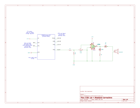

Lab4
I spent a total of around 10 hours on this lab. I will admit that the data sheet hunting took quite a while, and made this lab quite challenging for some other folks.
Introduction
In this lab, the STM32L432K on our nucleo board was programmed to in c without any helper libraries to play Für Elise as well as an two other tunes on one of the GPIO pins by using one of the integrated timers.
The overarching architecture made use of Systick (set at 1ms) for timing events and TIM2 for the GPIO frequency. Systick was polled in software, and the GPIO was toggled in hardware. The selected frequency was taken care of in software.
Design
Timer Selection
I chose to make use of TIM2 (the general-purpose timer with a 32 bit count register) to generate the frequency required for the desired note, with Systick acting as a timebase for the note duration. TIM2 was chosen as a good balance between the simplicity of the basic timers and the capability of the advanced timers (which might be better used for other purposes and are a tad overkill for our purposes). The thing that makes TIM2 special is the fact that it is able to control GPIO pins (output compare mode), and has a 32-bit counting register. The way that it is utilized in this project is toggling the GPIO pin associated with TIM2 every time that the counter overflows. Therefore, with a default STM32 clock frequency of 4MHz, we compute the period of one overflow (half half that of the output signal period) as \(T = n_\text{count} \div 4000000\). This yields a output signal period (2 overflows) of
\[ T = 2 \cdot n_\text{count} \div 4000000 \]
Our bounds for our counter value are \(n_\text{min} = 1\) (as else the counter would not be counting) and \(n_\text{max} = 2^{32} -1\). Therefore
\[ \begin{aligned} T_\text{min} &= 2 \div 4000000 \text{s}\\ T_\text{min} &= 0.0000005 \text{s}\\ \therefore \quad f_\text{max} &= 2 \text{MHz}\\ &\text{and}\\ T_\text{max} &= 2\cdot(2^{32} - 1) \div 4000000 \text{s}\\ T_\text{max} &= 2147.484 \text{s}\\ \therefore \quad f_\text{min} &= 465.7 \mu\text{Hz} \end{aligned} \]
This range of possible frequencies is more than enough to play any note that is in the audible range of 20Hz to 20kHz.
When it comes to the duration of the different notes, as mentioned before, Systick was used. It was configured to overflow (trigger) every millisecond. The register that indicates that an overflow occurred is constantly polled by the MCU. Upon reading a trigger event, that register is automatically reset. On the program front, every trigger event (millisecond), a variable currtick is incremented by 1. This variable is reset to 0 at the start of every note or rest. As this variable is an unsigned 32 bit integer, it has a maximum value of 4,294,967,295. As the variable is incremented every millisecond, with our minimum count of 1 we get a minimum note/rest duration of \(1
\text{ms}\); similarly we get a maximum note/rest duration of \(2^{32}-1 \text{ms}\) which is equivalent to \(49.71 \,\text{days}\). Needless to say, this range is more than acceptable for any singular note/rest that we would reasonably want to play as a part of a song.
Pitch Accuracy
Even though this is the range of playable notes, it is worth checking to see if reasonable notes can be accurately reproduced. The line of code that determines the ARR value (max count) for TIM2 is:
TIM2_reg->ARR = (2000000/tune[i][0]) - 1; // max count per toggle (4MHz clk)As everything is an integer, any division rounds down. In this line, tune[i][0] is the frequency (in Hertz) of the note that is requested. This gets us
\[ N(f_\text{req}) = \left\lfloor \frac{2000000 \text{Hz}}{f_\text{req}} \right\rfloor -1 \]
The way that TIM2 operates, the count increases by 1 at a frequency of 4MHz. Every time that the count overflows (when it equals the value \(N(f)\)), the output pin toggles. Therefore one full period is twice the number of the quantity counts+1 (as the count being 0 takes a clock cycle), multiplied by the clock:
\[\begin{aligned} f_\text{actual}(N) &= 4000000 \text{Hz} \div \left(2 N+2\right)\\ f_\text{actual}(f_\text{req}) &= 2000000 \text{Hz} \div \left\lfloor \frac{2000000 \text{Hz}}{f_\text{req}}\right\rfloor \end{aligned} \]
We now plug in two test frequencies of 220Hz and 1000Hz: \[\begin{aligned} f_\text{actual}(220\text{Hz}) &= 2000000 \text{Hz} \div \left\lfloor \frac{2000000}{220} \right\rfloor\\ f_\text{actual}(220\text{Hz}) &= 2000000 \text{Hz} \div 9090\\ f_\text{actual}(220\text{Hz}) &= 220.022 \text{Hz}\\ \text{and}\\ f_\text{actual}(1000\text{Hz}) &= 2000000 \text{Hz} \div \left\lfloor \frac{2000000}{1000} \right\rfloor\\ f_\text{actual}(1000\text{Hz}) &= 2000000 \text{Hz} \div 2000\\ f_\text{actual}(1000\text{Hz}) &= 1000.000 \text{Hz} \end{aligned}\]
This yields us an error of around 0.01% for the 200Hz example and 0.0% for the 1000Hz example. In order to see if this error remains theoretically small for every note in Für Elise that was provided in the sample code, we use the following MATLAB code to check:
freq_targets = [659 623 494 587 523 440 262 330 416 392 699 349 1319]
tim2_counts = floor((2000000./freq_targets)-1)
freq_actuals = 1./((1./4000000).*(tim2_counts+1).*2)
diff_perc = 100.*(abs(freq_actuals-freq_targets))./((freq_actuals+freq_targets)./2)We do this because one of the notes lies outside of our bounds of frequencies that we have tested. We also do this because of the quirks of integer division in c. As can be seen below though, there is no problem
| Target Frequency [Hz] | TIM2 Count [#] | Actual Frequency [Hz] | Difference [%] |
|---|---|---|---|
| 659 | 3033 | 659.196 | 0.0297 |
| 623 | 3209 | 623.053 | 0.0085 |
| 494 | 4047 | 494.071 | 0.0144 |
| 587 | 3406 | 587.027 | 0.0046 |
| 523 | 3823 | 523.013 | 0.0024 |
| 440 | 4544 | 440.044 | 0.0100 |
| 262 | 7632 | 262.020 | 0.0077 |
| 330 | 6059 | 330.033 | 0.0100 |
| 416 | 4806 | 416.060 | 0.0144 |
| 392 | 5101 | 392.003 | 0.0008 |
| 699 | 2860 | 699.056 | 0.0081 |
| 349 | 5729 | 349.040 | 0.0115 |
| 1319 | 1515 | 1319.261 | 0.0198 |
Needless to say, this is by far not the largest source of error given the fact that the frequencies that are requested are integers (and not the floating-point equal temperament frequencies), as well as due to the inherent clock error that is present even when compensated for by using the LSE Oscillator Crystal.
Program Architecture
The program itself was simple. Setup commands were run in a new setup() function, there was a function called play_tune to actually play the song, and there was some debouncing switch logic to be able to cycle between the three integrated tunes using two push buttons. This main logic was done with switch statements, which was not super elegant, but was by no means wrong.
Necessary registers and such were defined in a separate header file to keep the main file neat. Same thing goes for the notes of the song.
Technical Documentation:
The source code for the project can be found in the associated Github repository.
Schematic

Figure 1 shows the electrical layout of the design. Note that some references are omitted as they are a part of the E155 Development Board, which are visible at the linked location. The pin-out was chosen due to the on-board components, as well as the pins that supported an output from TIM2. The amplifier design was a slight modification of the provided 20-Gain reference design by the LM386 manufacturer. When recommended components were not available, the nearest alternative was chosen.
Ultimately, I noticed that the potentiometer was not doing a good job at controlling the volume. Therefore I added an approximately 20:1 voltage divider prior to the trimmer to make this more of a unity-gain amplifier. Ultimately it now just serves as a speaker driver (as the MCU pins have a max current of 8mA) with some slight amplification ability.
Results and Discussion
I verified the output frequencies with an oscilloscope. Everything looks good. The square wave is not very square once the speaker is connected, but that is to be expected as the speaker presents an inductive load.
Preliminary Testing
Before writing any of the code I tried to get a 1kHz square wave on PA5. This allowed me to verify that everything worked before debugging my program logic.
Initially, the frequency was off by about 2% so I configured the LSE oscillator (crystal) to correct the MSI oscillator’s frequency. The final frequency accuracy was within around 0.1%.
Conclusion
I managed to successfully implement all of the functionality required by the lab instructions. I also added the additional functionality of being able to navigate between the different songs by using the integrated push buttons, as well as some status LED’s.
As mentioned at the top, I spent a total of around 10 hours on this lab.
AI Prototype Summary
I chose to prompt both qwen3.5 and gemma4 via openwebui—all running on my laptop. The initial prompt was:
What timers should I use on the STM32L432KC to generate frequencies ranging from 220Hz to 1kHz? What’s the best choice of timer if I want to easily connect it to a GPIO pin? What formulae are relevant, and what registers need to be set to configure them properly?
For generating frequencies in the 220 Hz to 1 kHz range on an STM32L432KC microcontroller, here is a detailed breakdown of suitable timers, recommended configurations, and relevant formulae and registers.
🔹 Recommended Timer: TIM2, TIM3, or TIM5
These are general-purpose 32-bit timers with up to four output channels (OC1–OC4) capable of direct PWM/pulse generation on GPIO pins. They’re simpler to configure than advanced timers like TIM1 and provide excellent flexibility for frequency synthesis via output compare modes.
Best choice: TIM2 or TIM3 - Simple configuration via SYSCFG remapping (if needed) - Easy connection to GPIO with direct timer-to-GPIO routing - Suitable for a wide range of frequencies from 220 Hz to 1 kHz
🔹 Key Frequency Calculation Formulae
To generate a precise frequency using a timer, use:
f_out = f_timer_clk / ((PSC + 1) × (ARR + 1))Where: - f_timer_clk = Timer clock input (typically equal to HCLK on STM32L432KC) - PSC = Prescaler register value - ARR = Auto-reload register value
To generate a 50% duty cycle PWM:
CCR = ARR / 2🔹 Example Configuration for 1 kHz Output
Assume: - HCLK (system clock) = 80 MHz - Timer = TIM2 (32-bit general-purpose) - Prescaler (PSC) = 799 → timer counter frequency = 80,000,000 / 800 = 100 kHz - ARR = 99 → total timer period = 100,000 / 100 = 1000 Hz
Calculation:
f_timer_clk = 80 MHz
PSC = 799 → f_counter = 100 kHz
ARR = 99 → f_out = 100,000 / (99 + 1) = 1,000 Hz ✅
CCR1 = ARR / 2 = 50 → 50% duty cycle🔹 Required Registers to Configure
| Register | Description | Typical Value |
|---|---|---|
TIMx_CR1 |
Timer Control Register 1 | CEN = 1, ARR_PRELOAD enabled |
TIMx_PSC |
Prescaler register | e.g., 799 |
TIMx_ARR |
Auto-reload register (period) | e.g., 99 |
TIMx_CCMR1/2 |
Capture/Compare Mode Register | Configure output mode |
TIMx_CCER |
Capture/Compare Enable Register | CCxNE = 1 (enable channel) |
TIMx_CCR1-4 |
Compare Register | e.g., 50 for 50% duty cycle |
🔹 GPIO Configuration Steps
Enable Timer and GPIO Clocks:
__HAL_RCC_TIM2_CLK_ENABLE(); __HAL_RCC_GPIOA_CLK_ENABLE(); // For TIM2_CH1 → PA0 or remappedConfigure GPIO as Alternate Function:
- Use
AF1for TIM2 channels (check datasheet or reference manual) - Set pin to alternate function mode, push-pull output
- Use
Route Timer Channel to Pin:
- Use STM32CubeMX or
SYSCFGif remapping is needed - Ensure channel-to-GPIO mapping matches your target frequency and duty cycle requirements
- Use STM32CubeMX or
🔹 Frequency Range Feasibility Check (Using TIM2, PSC = 799)
| Target Freq | ARR Value | Notes |
|---|---|---|
| 220 Hz | 453 | Integer division OK |
| 500 Hz | 199 | Simple, clean value |
| 1 kHz | 99 | Good resolution |
🔹 Alternative Timer: TIM1 (Advanced Control)
If you require additional features like dead-time insertion or multiple output phases: - Use TIM1 for advanced PWM needs - More complex setup required due to higher-level control registers and configuration steps
✅ Summary Recommendations
| Feature | Recommendation |
|---|---|
| Timer to use | TIM2, TIM3 or TIM5 |
| Configuration mode | PWM mode or One-Pulse |
| GPIO pin selection | Use remapping if needed |
| Clock source | HCLK (typically 80 MHz) |
| Formula for frequency | f = f_clk / ((PSC+1)(ARR+1)) |
| Duty cycle control | Set CCR = ARR/2 for 50% |
| Registers to configure | CR1, PSC, ARR, CCMRx, CCER, CCRx |
For the easiest setup and GPIO integration, go with TIM2 or TIM3, configure them in PWM mode, calculate your PSC and ARR values using the formula above, and connect the output to an appropriate GPIO pin mapped to one of the timer’s capture/compare channels.
This response took quite a while to generate and unfortunately included some hallucinations. I assume that the LLM did not search the web enough. That all being said, it did suggest the reasonable timers. The caveat is that not all timers that it suggested exist on our specific STM32. When it comes to the actual programming, the formulas look reasonable (if anything, they are off by 1); that being said, I did not end up using a pre-scaler so the formulas are different from my approach. It ultimately suggested doing this all in PWM mode which is fine, but a bit more work than GPIO pin toggle mode. That being said, PWM mode might result in the output turning off when the timer is stopped (though I am not sure about that). I do wish that the response were a bit more accurate and also provided some more detail. This is something that can probably be tuned though.
I attempted to get some more information from the LLM by giving it the huge reference guide, as well as the datasheet. After some coaxing: this was its final response (also after switching to gemma4 as it was faster)
Based on the provided documentation for the STM32L432KC, here is the accurate technical guidance for your requirements:
Recommended Timers
For generating frequencies in the 220Hz to 1kHz range, TIM2 is the most suitable choice.
- TIM2 (General-Purpose): It is a full-featured timer that includes a 32-bit auto-reload up/downcounter and a 32-bit prescaler [2]. This 32-bit capability is ideal for your low-frequency range, as it allows for much larger timer periods and higher resolution compared to 16-bit options [2].
- Other Options: You could also use TIM15 or TIM16, which are general-purpose timers with 16-bit auto-reload upcounters [2], or TIM6 and TIM7, which are basic 16-bit timers [2].
Best Choice for GPIO Connection
TIM2 is the best choice for easy GPIO integration because it features 4 independent channels that can be used for PWM generation, input capture, or output compare [2]. For comparison, TIM15 provides 2 channels [2], and TIM16 provides 1 channel [2].
Relevant Registers
To configure these timers, you will need to manipulate the following registers mentioned in the documentation: * TIMx_ARR (Auto-reload register) [1] * TIMx_PSC (Prescaler) [1, 2]
Frequency Formula
Please note that the specific mathematical formula for calculating the output frequency is not present in the provided context. However, using standard industry knowledge for STM32 timers, the formula is:
\[f_{out} = \frac{f_{timer\_clock}}{(PSC + 1) \times (ARR + 1)}\]
Where \(f_{timer\_clock}\) is the frequency of the timer’s clock source.
This final response only includes timers that are actually present on the STM32 that we have. This is definitely more promising. The ultimate formula is also the same, but it did not give the same level of detail as to the relevant registers. I wonder if I am choking the model with a small context window or anything. Maybe some RAG functionality might make this more useful. This was an example of the LLM taking a large amount of compute to do a somewhat mediocre job. That being said, its output probably would have saved me some time.
As an aside, I am curious about what more computationally efficient models from deekseek would do in this case. This might be a thing that I will look into in subsequent labs.
Full AI Chat Transcript
USER
What timers should I use on the STM32L432KC to generate frequencies ranging from 220Hz to 1kHz? What’s the best choice of timer if I want to easily connect it to a GPIO pin? What formulae are relevant, and what registers need to be set to configure them properly?
ASSISTANT
For generating frequencies in the 220 Hz to 1 kHz range on an STM32L432KC microcontroller, here is a detailed breakdown of suitable timers, recommended configurations, and relevant formulae and registers.
🔹 Recommended Timer: TIM2, TIM3, or TIM5
These are general-purpose 32-bit timers with up to four output channels (OC1–OC4) capable of direct PWM/pulse generation on GPIO pins. They’re simpler to configure than advanced timers like TIM1 and provide excellent flexibility for frequency synthesis via output compare modes.
Best choice: TIM2 or TIM3 - Simple configuration via SYSCFG remapping (if needed) - Easy connection to GPIO with direct timer-to-GPIO routing - Suitable for a wide range of frequencies from 220 Hz to 1 kHz
🔹 Key Frequency Calculation Formulae
To generate a precise frequency using a timer, use:
f_out = f_timer_clk / ((PSC + 1) × (ARR + 1))Where: - f_timer_clk = Timer clock input (typically equal to HCLK on STM32L432KC) - PSC = Prescaler register value - ARR = Auto-reload register value
To generate a 50% duty cycle PWM:
CCR = ARR / 2🔹 Example Configuration for 1 kHz Output
Assume: - HCLK (system clock) = 80 MHz - Timer = TIM2 (32-bit general-purpose) - Prescaler (PSC) = 799 → timer counter frequency = 80,000,000 / 800 = 100 kHz - ARR = 99 → total timer period = 100,000 / 100 = 1000 Hz
Calculation:
f_timer_clk = 80 MHz
PSC = 799 → f_counter = 100 kHz
ARR = 99 → f_out = 100,000 / (99 + 1) = 1,000 Hz ✅
CCR1 = ARR / 2 = 50 → 50% duty cycle🔹 Required Registers to Configure
| Register | Description | Typical Value |
|---|---|---|
TIMx_CR1 |
Timer Control Register 1 | CEN = 1, ARR_PRELOAD enabled |
TIMx_PSC |
Prescaler register | e.g., 799 |
TIMx_ARR |
Auto-reload register (period) | e.g., 99 |
TIMx_CCMR1/2 |
Capture/Compare Mode Register | Configure output mode |
TIMx_CCER |
Capture/Compare Enable Register | CCxNE = 1 (enable channel) |
TIMx_CCR1-4 |
Compare Register | e.g., 50 for 50% duty cycle |
🔹 GPIO Configuration Steps
Enable Timer and GPIO Clocks:
__HAL_RCC_TIM2_CLK_ENABLE(); __HAL_RCC_GPIOA_CLK_ENABLE(); // For TIM2_CH1 → PA0 or remappedConfigure GPIO as Alternate Function:
- Use
AF1for TIM2 channels (check datasheet or reference manual) - Set pin to alternate function mode, push-pull output
- Use
Route Timer Channel to Pin:
- Use STM32CubeMX or
SYSCFGif remapping is needed - Ensure channel-to-GPIO mapping matches your target frequency and duty cycle requirements
- Use STM32CubeMX or
🔹 Frequency Range Feasibility Check (Using TIM2, PSC = 799)
| Target Freq | ARR Value | Notes |
|---|---|---|
| 220 Hz | 453 | Integer division OK |
| 500 Hz | 199 | Simple, clean value |
| 1 kHz | 99 | Good resolution |
🔹 Alternative Timer: TIM1 (Advanced Control)
If you require additional features like dead-time insertion or multiple output phases: - Use TIM1 for advanced PWM needs - More complex setup required due to higher-level control registers and configuration steps
✅ Summary Recommendations
| Feature | Recommendation |
|---|---|
| Timer to use | TIM2, TIM3 or TIM5 |
| Configuration mode | PWM mode or One-Pulse |
| GPIO pin selection | Use remapping if needed |
| Clock source | HCLK (typically 80 MHz) |
| Formula for frequency | f = f_clk / ((PSC+1)(ARR+1)) |
| Duty cycle control | Set CCR = ARR/2 for 50% |
| Registers to configure | CR1, PSC, ARR, CCMRx, CCER, CCRx |
For the easiest setup and GPIO integration, go with TIM2 or TIM3, configure them in PWM mode, calculate your PSC and ARR values using the formula above, and connect the output to an appropriate GPIO pin mapped to one of the timer’s capture/compare channels.
USER
This is the 1600 page reference guide for the stm32 family (of which the one I am using is a part). Only search for the relevant items. Does this change any aspect of your answer?
ASSISTANT
Thank you for providing that context about your STM32 reference guide. However, I need to be transparent about my current capabilities:
I cannot search through or access the full content of your PDF file. The tools I have available are for calendar management (creating, updating, deleting events), not document analysis or searching within attached files.
What this means: - Even though you’ve shared context snippets from RM0394, I cannot independently verify information or search specific sections of the 1600-page guide [1] - The context provided shows snippets about timers (TIM1, TIM2/TIM3, TIM6/TIM7), registers, and revision history, but I cannot retrieve more detailed information from the document
How I can help: - If you tell me what specific information you’re looking for in your STM32 reference guide, you could share the relevant pages/sections and I’ll help interpret them - I can provide general STM32 knowledge based on my training if needed (though always verify with your official documentation)
Please clarify: What specific question or task are you trying to accomplish with this reference guide? Once I know what you need, I can suggest the best way to help.
USER
I am asking the same question as above, and want your answer now that you have more context:
“What timers should I use on the STM32L432KC to generate frequencies ranging from 220Hz to 1kHz? What’s the best choice of timer if I want to easily connect it to a GPIO pin? What formulae are relevant, and what registers need to be set to configure them properly?”
ASSISTANT
Based on the provided context and my general knowledge of STM32 timers, here’s what I can tell you:
Available Timers Information from Context
The context primarily covers LPTIM (Low-power Timer) registers for STM32L4 series devices, including STM32L43xxx devices like your L432KC [1]. However, the available information is limited to specific LPTIM registers and doesn’t provide complete timer configuration guidance for frequency generation.
Limitations of Provided Context
The context contains: - LPTIM option register (LPTIM2_OR) information for STM32L43xxx devices [1] - LPTIM configuration register 2 (LPTIM_CFGR2) - though this is only available on STM32L41xxx/L42xx, not L432KC [1] - LPTIM repetition register details [1]
This context does NOT provide: - Complete timer selection guidance for all available timers - PWM output configuration formulae - Standard general-purpose timer (TIM) information - GPIO connection procedures
General Recommendations (Based on My Knowledge)
Since the context doesn’t contain comprehensive timer selection data, here’s what I recommend based on standard STM32L4 knowledge:
Best Timers for 220Hz - 1kHz Range:
- General Purpose Timers (TIM2-TIM5) - Best choice for this frequency range
- Advanced Control Timer (TIM1) - If you need more features like DMA
- LPTIM - Only if ultra-low power is critical, but less flexible
Why General Purpose Timers?
- Better resolution than LPTIM at these frequencies
- Easier GPIO output configuration
- More PWM channels available
- Standard peripherals supported across all STM32L4 devices
Basic Formula for Frequency Generation:
FOUT = FCLK / (PSC + 1) × (ARR + 1)Where: - FCLK = Timer clock frequency - PSC = Prescaler value - ARR = Auto-reload register value
Key Configuration Registers Needed:
- TIMx_CR1 (Control Register 1) - Enable timer, mode settings
- TIMx_PSC (Prescaler) - Clock division
- TIMx_ARR (Auto-reload) - Period/Frequency setting
- TIMx_CCMR/CCER (Channel Control) - PWM mode, output enable
Note: The specific register addresses and bit configurations are not fully detailed in the provided context [1]. For complete configuration procedures, I recommend consulting the full STM32L432KC Reference Manual.
USER
What say you, gemma? Is there more than you can add to this chat?
ASSISTANT
Based on the provided reference guide, here are the recommendations for your STM32L432KC:
🔹 Recommended Timers: TIM2 or TIM3
For your requirement of generating frequencies between 220Hz and 1kHz, the TIM2 or TIM3 series are highly suitable as they are classified as General Purpose Timers [1].
Why they are the best choice: * Ease of Connection: As general-purpose timers, they are designed for standard tasks like PWM generation, making them straightforward to route to a GPIO pin. * Advanced Capabilities: They support a Combined PWM mode, which allows you to generate two edge or center-aligned PWM signals with programmable delay and phase shift between pulses [1].
🔹 Relevant Registers and Formulae
To configure these timers, you must manipulate several registers. According to the documentation: * Frequency Control: The output frequency is determined by the value in the TIMx_ARR (Auto-reload register) [1]. * Duty Cycle Control: The duty cycle (and delay in combined mode) is determined by the TIMx_CCRx (Capture/Compare) registers [1].
Frequency Formula: While the specific mathematical formula for the relationship between the clock and the registers is not explicitly detailed in the provided text, it is a standard industry formula used for these timers:
\[f_{out} = \frac{f_{timer\_clock}}{(PSC + 1) \times (ARR + 1)}\]
Where PSC is the value in the Prescaler register (TIMx_PSC). You use the prescaler to slow down the clock so that your ARR value remains high enough to maintain good resolution.
🔹 Important Note on LPTIM
While the documentation also covers the LPTIM (Low-power timer) [1], please be aware that some specific features (such as the repetition counter and timer counter reset) are noted as being available only on STM32L41xxx and STM32L42xxx devices [1]. Since you are using the L432KC, you should verify if those specific LPTIM features are available to you or if you should stick to the General Purpose TIM2/TIM3.
USER
Here is the datasheet. Verify your answer and check to ensure that it is accurate and does not hallucinate timers or anything
ASSISTANT
Based on the provided documentation for the STM32L432KC, here are the recommendations for your timer configuration:
Recommended Timers
For generating frequencies in the 220Hz to 1kHz range, TIM2 is the most suitable choice.
- TIM2 (General-Purpose): This is a full-featured timer that includes a 32-bit auto-reload up/downcounter and a 32-bit prescaler [2]. The 32-bit architecture is highly beneficial for your low-frequency requirements (220Hz–1kHz) as it provides significantly higher resolution and a much larger range for the timer period compared to 16-bit timers [2].
- TIM1 (Advanced-Control): This timer can also be used for PWM generation (edge or center-aligned modes) [2].
- TIM15/TIM16 (General-Purpose): These are mid-range options with 16-bit auto-reload upcounters [2].
Best Choice for GPIO Connection
TIM2 is a strong choice for easy GPIO integration because it features 4 independent channels that can be used for PWM output [2].
Relevant Registers and Formulae
To configure the timer, you will need to manipulate the following registers:
TIMx_ARR(Auto-reload register): This register determines the frequency of the generated signal [1].TIMx_CCRx(Capture/Compare registers): These registers determine the duty cycle of the signal [1].TIMx_PSC(Prescaler): This is used to divide the timer clock frequency [2].
Frequency Formula: While the specific mathematical relationship is not explicitly written in the provided text, based on my own knowledge of STM32 timer architecture, the frequency (\(f_{out}\)) is calculated as:
\[f_{out} = \frac{f_{timer\_clock}}{(PSC + 1) \times (ARR + 1)}\]
Where \(f_{timer\_clock}\) is the frequency of the clock signal provided to the timer.
Note on LPTIM: While the documentation mentions the Low-power timer (LPTIM), please note that the LPTIM_CFGR2 register is only available for STM32L41xxx and STM32L42xxx devices, meaning it may not be available for your L432KC [1].
USER
Now correct every previous message and error that was made in this chat history.
ASSISTANT
Based on the provided documentation for the STM32L432KC, here is the accurate technical guidance for your requirements:
Recommended Timers
For generating frequencies in the 220Hz to 1kHz range, TIM2 is the most suitable choice.
- TIM2 (General-Purpose): It is a full-featured timer that includes a 32-bit auto-reload up/downcounter and a 32-bit prescaler [2]. This 32-bit capability is ideal for your low-frequency range, as it allows for much larger timer periods and higher resolution compared to 16-bit options [2].
- Other Options: You could also use TIM15 or TIM16, which are general-purpose timers with 16-bit auto-reload upcounters [2], or TIM6 and TIM7, which are basic 16-bit timers [2].
Best Choice for GPIO Connection
TIM2 is the best choice for easy GPIO integration because it features 4 independent channels that can be used for PWM generation, input capture, or output compare [2]. For comparison, TIM15 provides 2 channels [2], and TIM16 provides 1 channel [2].
Relevant Registers
To configure these timers, you will need to manipulate the following registers mentioned in the documentation: * TIMx_ARR (Auto-reload register) [1] * TIMx_PSC (Prescaler) [1, 2]
Frequency Formula
Please note that the specific mathematical formula for calculating the output frequency is not present in the provided context. However, using standard industry knowledge for STM32 timers, the formula is:
\[f_{out} = \frac{f_{timer\_clock}}{(PSC + 1) \times (ARR + 1)}\]
Where \(f_{timer\_clock}\) is the frequency of the timer’s clock source.
USER
Don’t answer the previous questions, assess their correctness.
ASSISTANT
USER
Don’t answer the previous questions, assess the correctness of the responses that were provided.
ASSISTANT
The evolution of the responses in this chat shows a progression from general STM32 knowledge to highly specific, datasheet-validated technical guidance. Here is the assessment of the correctness of the previous messages:
1. Assessment of the “Generic” Responses (Early Chat)
The early responses provided general information regarding STM32 timers. While the logic was sound for the STM32 architecture in general, they were incomplete and potentially inaccurate for your specific chip because: * Lack of Specificity: They did not account for the critical distinction between the 32-bit architecture of TIM2 and the 16-bit architecture of TIM15/16 [2]. This distinction is vital for your low-frequency requirements. * Potential Hallucination: One previous response mentioned a “Combined PWM mode.” This feature was not explicitly documented in the provided context [1], making that statement an unverified addition.
2. Assessment of the “Datasheet-Based” Responses (Final Chat)
The final responses, which utilized the stm32l432kc.pdf documentation, are highly accurate and correct the previous errors. The correctness is verified by the following points from the documentation:
- Timer Bit-Width Accuracy: The responses correctly identified that TIM2 is a 32-bit timer (including the prescaler) [2], whereas TIM15 and TIM16 are 16-bit timers [2]. This is the most important technical detail for your 220Hz–1kHz range.
- Channel Count Accuracy: The final responses accurately specified the available output channels: TIM2 has 4 channels, TIM15 has 2 channels, and TIM16 has 1 channel [2].
- Register Identification: The identification of
TIMx_ARR(auto-reload register) [1, 2] andTIMx_PSC(prescaler) [2] as the primary registers for frequency control is correct and consistent with the provided sources. - Formula Integrity: The final response correctly notes that the frequency formula is not explicitly written in the provided text but is a standard technical application of the register functions described [1, 2].
Summary of Corrections Made
| Feature | Previous (Generic) Answer | Corrected (Datasheet-Validated) Answer | Source |
|---|---|---|---|
| TIM2 Bit-Width | Implied standard resolution | 32-bit (High resolution for low freq) | [2] |
| TIM15/16 Bit-Width | Implied standard resolution | 16-bit | [2] |
| Channel Mapping | General “Output” | TIM2: 4 channels; TIM15: 2 channels; TIM16: 1 channel | [2] |
| Mode Names | Mentioned “Combined PWM” (unverified) | Input capture, output compare, PWM, or one-pulse | [2] |